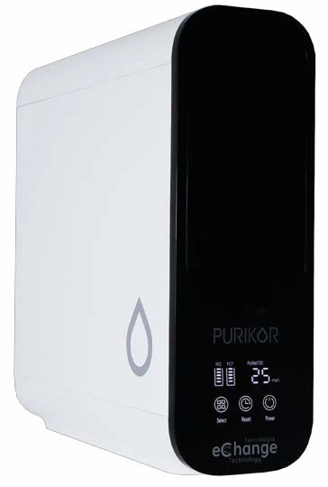

FILTRACIÓN · PURIFICACIÓN · REFACCIONES
El equipo correcto.
Agua de calidad.
Todo para tu sistema de tratamiento de agua. Encuentra equipos, compara modelos y consulta sus especificaciones en un solo lugar.

DE LA NECESIDAD A LA SOLUCIÓN
Cada aplicación,
su equipo.
Desde el agua de tu hogar hasta un sistema industrial. Explora la línea que necesitas.
EQUIPOS + REFACCIONES
Encuentra lo que necesitas.
Busca por nombre, tecnología o código de referencia.
Cargando catálogo…
No pudimos cargar el catálogo.
Intenta de nuevo o descarga el PDF completo.
DECIDE CON INFORMACIÓN
Las especificaciones.
Sin perder detalle.
Consulta medidas, capacidad, conexiones y condiciones de operación en la ficha original de cada familia. También puedes descargar el catálogo completo para revisar tu proyecto.
Descargar PDF · 10.8 MBANTES DE ELEGIR
Preguntas frecuentes.
¿Cómo consulto el precio de un equipo?
Agrega el modelo a tu cotización, indica la cantidad y descarga la solicitud. Los precios y existencias se confirman con el vendedor antes de realizar una compra.
¿Cómo encuentro un repuesto compatible?
Busca el código de tu equipo o repuesto. Abre su ficha y revisa los modelos compatibles, conexiones y dimensiones en el catálogo original. Si hay dudas, incluye el modelo de tu equipo en las notas de la solicitud.
¿Qué diferencia hay entre filtración y ósmosis inversa?
La selección depende de la calidad del agua de entrada y de tu aplicación. El catálogo incluye filtración de sedimentos, carbón activado, ultrafiltración y ósmosis inversa. Revisa las condiciones de operación de cada modelo y solicita la selección técnica para tu proyecto.
¿La selección de equipos confirma una compra?
No. La lista sirve para solicitar cotización. La compra, disponibilidad, entrega y forma de pago se acuerdan después con el vendedor.